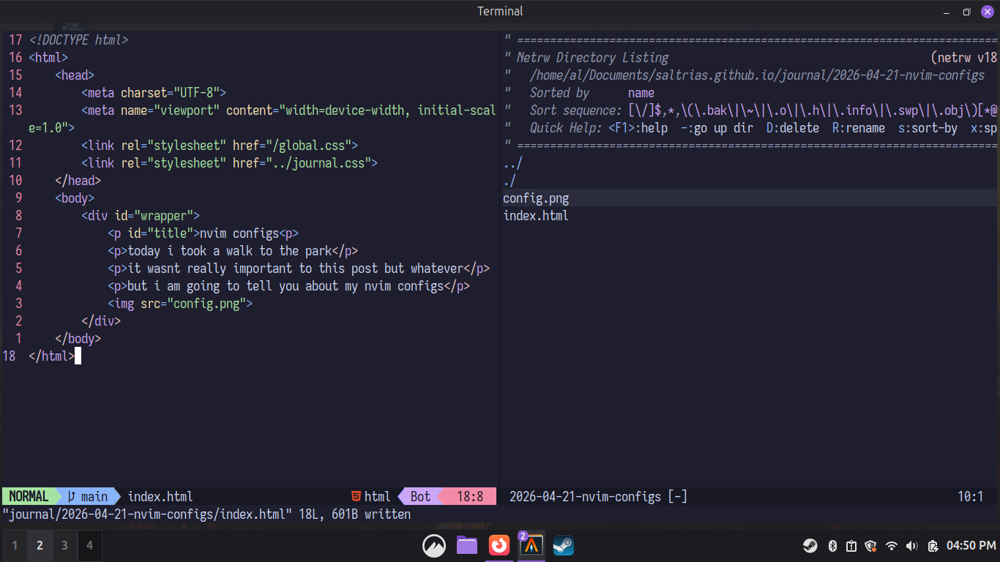

nvim configs
today i took a walk to the park
it wasnt really important to this post but whatever
but i am going to tell you about my nvim configs

yes i use linux mint
it's not really a lot, it's just the following:
i currently use catppuccin, lsp, lualine and telescope. i don't really use telescope a lot but hey you never know when you might need it
uh yeah thats it see ya later ig :d